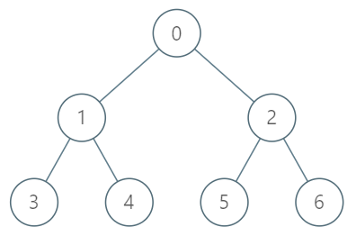

1483. 树节点的第 K 个祖先
题目与约束
给你一棵树，树上有 n 个节点，按从 0 到 n-1 编号。树以父节点数组的形式给出，其中 parent[i] 是节点 i 的父节点。树的根节点是编号为 0 的节点。
树节点的第 k 个祖先节点是从该节点到根节点路径上的第 k 个节点。
实现 TreeAncestor 类：
-
TreeAncestor（int n， int[] parent）对树和父数组中的节点数初始化对象。 -
getKthAncestor``(int node, int k)返回节点node的第k个祖先节点。如果不存在这样的祖先节点，返回-1。
示例 1：

输入：
["TreeAncestor","getKthAncestor","getKthAncestor","getKthAncestor"]
[[7,[-1,0,0,1,1,2,2]],[3,1],[5,2],[6,3]]
输出：
[null,1,0,-1]
解释：
TreeAncestor treeAncestor = new TreeAncestor(7, [-1, 0, 0, 1, 1, 2, 2]);
treeAncestor.getKthAncestor(3, 1); // 返回 1 ，它是 3 的父节点
treeAncestor.getKthAncestor(5, 2); // 返回 0 ，它是 5 的祖父节点
treeAncestor.getKthAncestor(6, 3); // 返回 -1 因为不存在满足要求的祖先节点
提示：
-
1 <= k <= n <= 5 * 104 -
parent[0] == -1表示编号为0的节点是根节点。 -
对于所有的
0 < i < n，0 <= parent[i] < n总成立 -
0 <= node < n -
至多查询
5 * 104次
核心不变量
用
up[j][v]表示节点v的「向上2^j步」祖先（不存在则-1）。它满足递推up[j][v] = up[j-1][ up[j-1][v] ]：先走2^(j-1)步，再走2^(j-1)步，合计2^j步。任何k都能拆成二进制位之和，故查询只需逐位跳跃。
完整推导
思路推导
-
朴素的向上走为何慢 每次查询都沿着父指针一步步上行，单次 O(k)，最坏 O(n)。若查询达 5×10⁴ 次，最坏 O(n·q) 会超时。需要把「向上跳」加速。
-
二进制拆分的思想 任何整数
k都能写成若干个 2 的幂之和，例如k = 13 = 8+4+1。如果预先知道每个节点「向上 1、2、4、8、… 步」分别是谁，就能用k的二进制位，在 O(log k) 次跳跃内到达第k个祖先。 -
预处理倍增表 令
up[0][v] = parent[v]（向上 1 步）。更高层用递推：up[j][v] = up[j-1][ up[j-1][v] ]（若中间为 -1 则结果 -1）。 层数LOG取满足2^LOG > n的最小值（n≤5×10⁴ 时LOG≈16）。小例子：父数组[-1,0,0,1,1,2,2]，则up[0]=[-1,0,0,1,1,2,2]；up[1][3]=up[0][up[0][3]]=up[0][1]=0，即节点 3 向上 2 步是 0。 -
查询 遍历
k的每一位j，若第j位为 1，就node = up[j][node]；一旦node变成-1立即返回-1。全部跳完返回node。例如查询(5,2)：2 = 10₂，只跳第 1 位，up[1][5] = up[0][up[0][5]] = up[0][2] = 0，结果为 0。
Java 实现（TreeAncestor 倍增）
class TreeAncestor {
private final int LOG; // 倍增层数
private final int[][] up; // up[j][v] = v 向上 2^j 步的祖先
public TreeAncestor(int n, int[] parent) {
int log = 1;
while ((1 << log) <= n) log++; // 保证 2^LOG > n，足以表示任意 k <= n
LOG = log;
up = new int[LOG][n];
up[0] = parent.clone(); // 向上 1 步即父节点
for (int j = 1; j < LOG; j++) {
for (int v = 0; v < n; v++) {
int mid = up[j - 1][v];
up[j][v] = (mid == -1) ? -1 : up[j - 1][mid];
}
}
}
public int getKthAncestor(int node, int k) {
for (int j = 0; j < LOG; j++) {
if (((k >> j) & 1) == 1) { // k 的第 j 位为 1，向上跳 2^j 步
node = up[j][node];
if (node == -1) return -1; // 已经越过根
}
}
return node;
}
}
C++ 实现
#include <vector>
using namespace std;
class TreeAncestor {
int LOG;
vector<vector<int>> up; // up[j][v] = v 向上 2^j 步的祖先
public:
TreeAncestor(int n, vector<int>& parent) {
LOG = 1;
while ((1 << LOG) <= n) LOG++;
up.assign(LOG, vector<int>(n, -1));
up[0] = parent; // 向上 1 步
for (int j = 1; j < LOG; j++) {
for (int v = 0; v < n; v++) {
int mid = up[j - 1][v];
up[j][v] = (mid == -1) ? -1 : up[j - 1][mid];
}
}
}
int getKthAncestor(int node, int k) {
for (int j = 0; j < LOG; j++) {
if ((k >> j) & 1) {
node = up[j][node];
if (node == -1) return -1;
}
}
return node;
}
};
Python 实现
from typing import List
class TreeAncestor:
def __init__(self, n: int, parent: List[int]):
log = 1
while (1 << log) <= n:
log += 1
self.LOG = log
self.up = [parent[:]] # up[0] 为父节点
for j in range(1, log):
prev = self.up[j - 1]
cur = [-1] * n
for v in range(n):
mid = prev[v]
cur[v] = -1 if mid == -1 else prev[mid]
self.up.append(cur)
def getKthAncestor(self, node: int, k: int) -> int:
for j in range(self.LOG):
if (k >> j) & 1:
node = self.up[j][node]
if node == -1:
return -1
return node
复杂度
- 时间：初始化 O(n log n)（填充倍增表）；每次
getKthAncestor为 O(log k) ≤ O(log n)。 - 空间：O(n log n)。倍增表共
LOG × n个整数。
- 层数
LOG要够：必须保证最高位能覆盖k的最大值（2^LOG > n）。取少了会漏跳最高位，导致答案偏小；用while ((1 << LOG) <= n) LOG++最稳妥。 -1的传播：递推和查询时都要判空。若mid == -1，则up[j][v] = -1；查询中一旦跳到-1，后面再跳也无效，可提前返回。k逐位判断的方向：从低位j=0开始判断(k >> j) & 1，每一位对应跳2^j步，顺序不影响结果（因为祖先关系可交换结合），但务必覆盖到LOG-1。- 根节点的父是
-1：up[0][0] = -1，任何从根继续上跳都会得到-1，符合「不存在祖先」的语义。 - 扩展：倍增法还常用于「最近公共祖先 LCA」（在倍增表基础上按深度对齐后一起上跳）、「树上第 k 个祖先」、「区间查询的稀疏表（Sparse Table）」。它与「按深度 DFS + 记录路径」的 O(k) 暴力形成鲜明对比，是面试中体现算法功底的高频考点。